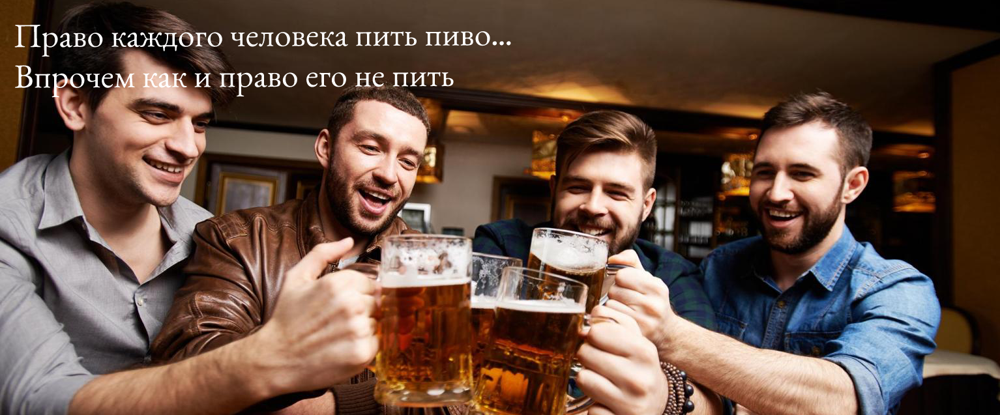

Партия любителй пива - ЗА СВОБОДУ ВЫБОРА
Партия любителей пива — политическая партия в Российской Федерации, зарегистрированная Минюстом РФ 9 августа 1994 года (Рег. N 2365)
Последние новости из жизни Партии
Прошел 54й съезд Партии любителей пива
В ходе съезда члены партии обсудили курс на дальнейшее развитие влияния партии в Государственной думе, а также провели прения касательно лучшего сорта пива
Внимание, Розыгрыш!
Партия любителей пива, при поддержке пивоварни «Greater Bash 17%», проводит розыгрыш 30 литров живого пива между всеми, подавшими зявку на вступление в партию до 30.01.2023, торопись учавствовать в розыгрыше!
Конкурс «Лучший пивовар»
Партия любителей пива объявляет конкурс за звание лучшего пивовара среди членов партии. Приглашаем всех желающих провести дегустацию пива и выбрать лучший сорт!
Адрес проведения конкурса: г. Москва, ул. Пушкина, д. Колотушкина
Быть любителем может каждый!
Напоминаем, стать членом Партии любителей пива может любой желающий, руководство партии всегда отстаивает право каждого человека пить пиво, в прочем как и право его не пить
Наша команда
iVanFromJapan
Генеральный секретарь
Самый главный человек в нашей партии.
Любитель пива.
Характер общительный.
Не женат
NicoNicoDougaKolya
Заместитель генерального секретаря
Колян
Очень добрый и позитивный человек
Характер стабильно нестабильный
Не женат
Spirit Breaker
Инвестор
Главный инвестор Партии любителей пива, по совместительству владелец пивоварни «Greater Bash 17%», обладатель фирменного удара призрачным цепом баратрума